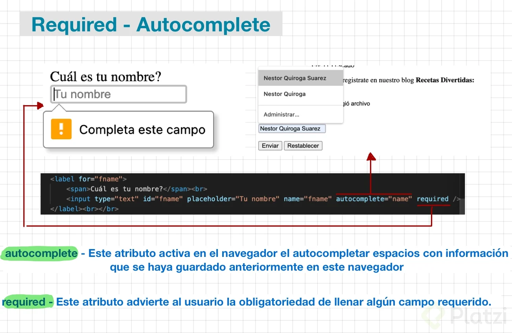

Sirven para hacer logging, para poder poner información, para que le llegue un producto, para poner una Tarjeta de Crédito o Tarjeta de Débito, para hacer ciertos pagos, etc. Es importante que el proyecto que estamos creando, sea amigable con el usuario.
Atributo required
Evita que el formulario sea enviado sin haberse rellenado los campos donde se colocó el atributo (required), ya que estos campos de entrada serían obligatorios o fundamentales.
Importante que el proyecto que creamos sea amigable con el usuario.
El tipo de dato email, nos ayuda a verificar si lo que se está escribiendo es en realidad un email, ya que verifica dentro de la cadena de texto, si hay un @ y un "." (punto).
Dentro del input vienen los atributos que nos ayuda a retener la información, para ser enviada al backend.
El autocompletado ayuda a mejorar la experiencia del usuario.
El navegador tiene herramientas como los atributos, que hacen más fácil la tarea para nosotros como desarrolladores, y así mismo al usuario.
La mayoría de desarrolladores realizan el trabajo de required desde el lado de JavaScript, pero nostros también podemos crear una primera capa de seguridad desde el formulario.
Revisar las líneas de código del del formulario, en el backend, apretando la siguiente combinación de teclas: Ctrl + Shift + C
Imágenes:

Valores de autocomplete:
- "off"
El navegador no puede ingresar o seleccionar automáticamente un valor para este campo. Es posible que el documento o la aplicación proporcione su propia función de autocompletar, o que los problemas de seguridad requieran que el valor del campo no se ingrese automáticamente.
- "on"
El navegador puede completar automáticamente la entrada. No se proporciona ninguna orientación sobre el tipo de datos que se esperan en el campo, por lo que el navegador puede usar su propio criterio.
- "name"
El campo espera que el valor sea el nombre completo de una persona. Generalmente se prefiere usar “nombre” en lugar de dividir el nombre en sus componentes porque evita tratar con la amplia diversidad de nombres humanos y cómo están estructurados; sin embargo, puede usar los siguientes valores de autocompletar si necesita dividir el nombre en sus componentes:
"honorific-prefix"
Prefijo tipo “Mrs.”, “Mr.”, “Miss”, “Ms.”, “Dr.”, or “Mlle.”.
"given-name"
Primer nombre (first name)
"additional-name"
Segundo nombre (middle name)
"family-name"
Apellido (last name)
"honorific-suffix"
Sufijo tipo “Jr.”, “B.Sc.”, “PhD.”, “MBASW”, or “IV”.
"nickname"
Un apodo.
- "email"
Dirección de correo electrónico
- "username"
Nombre de usuario
- "new-password"
Una nueva contraseña. Al crear una nueva cuenta o cambiar contraseñas, este es el campo “Ingrese su nueva contraseña”, a diferencia de cualquier campo “Ingrese su contraseña actual” que pueda estar presente. Esto puede ser utilizado por el navegador tanto para evitar ingresar accidentalmente una contraseña existente como para ofrecer ayuda para crear una contraseña segura.
- "current-password"
La contraseña actual del usuario.
- "organization-title"
Un puesto de trabajo, o el título que tiene una persona dentro de una organización, como “Escritor técnico senior”, “Presidente” o “Líder asistente de tropa”.
- "organization"
El nombre de una empresa u organización, como “Acme Widget Company” o “Girl Scouts of America”.
- "street-address"
Una dirección postal. Puede ser varias líneas de texto y debe identificar completamente la ubicación de la dirección dentro de su segundo nivel administrativo (generalmente una ciudad o pueblo), pero no debe incluir el nombre de la ciudad, el código postal o el nombre del país.
- "address-line1", "adress-line2", "adress-line3"
Cada línea individual de la dirección postal. Estos solo deberían estar presentes si la “dirección postal” también está presente.
- "address-level4"
El nivel administrativo más detallado, en direcciones que tienen cuatro niveles.
- "address-level3"
El tercer nivel administrativo, en domicilios con al menos tres niveles administrativos.
- "address-level2"
El segundo nivel administrativo, en domicilios con al menos dos de ellos. En países con dos niveles administrativos, normalmente sería la ciudad, pueblo, aldea u otra localidad en la que se encuentra la dirección.
- "address-level1"
El primer nivel administrativo en la dirección. Esta suele ser la provincia en la que se encuentra la dirección. En los Estados Unidos, este sería el estado. En Suiza, el cantón. En el Reino Unido, la ciudad postal.
- "country"
Código de país
- "country-name"
Nombre del país
- "postal-code"
Código postal o ZIP
- "cc-name"
El nombre completo tal como está impreso o asociado con un instrumento de pago, como una tarjeta de crédito. Por lo general, se prefiere utilizar un campo de nombre completo en lugar de dividir el nombre en pedazos.
- "cc-given-name"
Nombre (first name) en un instrumento de pago como una tarjeta de crédito.
- "cc-additional-name"
Un segundo nombre (middle name) como se indica en un instrumento de pago o tarjeta de crédito.
- "cc-family-name"
Un apellido, tal como figura en una tarjeta de crédito
- "cc-number"
Un número de tarjeta de crédito u otro número que identifique un método de pago, como un número de cuenta.
- "cc-exp"
Una fecha de vencimiento del método de pago, generalmente en el formato “MM / YY” o “MM / YYYY”.
- "cc-exp-month"
El mes en el que vence el método de pago
- "cc-exp-year"
El año en el que vence el método de pago
- "cc-csc"
El código de seguridad del instrumento de pago; en las tarjetas de crédito, este es el número de verificación de 3 dígitos que se encuentra en el reverso de la tarjeta.
- "cc-type"
El tipo de instrumento de pago (como “Visa” o “Master Card”).
- "transaction-currency"
La moneda en la que se realizará la transacción.
- "transaction-amount"
La cantidad, dada en la moneda especificada por “transacción-moneda”, de la transacción, para un formulario de pago.
- "language"
Un idioma preferido, dado como una etiqueta de idioma BCP 47 válida.
- "bday"
Una fecha de nacimiento, como una fecha completa.
- "bday-day"
El día de una fecha de nacimiento.
- "bday-month"
El mes de una fecha de nacimiento.
- "bday-year"
El año de una fecha de nacimiento.
- "sex"
Una identidad de género (como “Mujer”, “Fa’afafine”, “Hombre”), como texto de forma libre sin nuevas líneas.
- "tel"
Un número de teléfono completo, incluido el código del país. Si necesita dividir el número de teléfono en sus componentes, puede usar estos valores para esos campos:
tel-country-code
El código de país, como “1” para Estados Unidos, Canadá y otras áreas de América del Norte y partes del Caribe.
tel-national
El número de teléfono completo sin el componente de código de país, incluido un prefijo interno del país. Para el número de teléfono “1-855-555-6502”, el valor de este campo sería “855-555-6502”
tel-area-code
El código de área, con cualquier prefijo interno del país aplicado si corresponde.
tel-local
El número de teléfono sin el código de país o área. Esto se puede dividir en dos partes, para los números de teléfono que tienen un número de intercambio y luego un número dentro del intercambio. Para el número de teléfono “555-6502”, utilice “tel-local-prefix” para “555” y “tel-local-suffix” para “6502”.
tel-extension
Un código de extensión de teléfono dentro del número de teléfono, como un número de habitación o suite en un hotel o una extensión de oficina en una empresa.
- "impp"
Una URL para un punto final de protocolo de mensajería instantánea, como “xmpp: username@example.net”.
- "url"
Una URL, como una página de inicio o la dirección del sitio web de la empresa, según corresponda, dado el contexto de los otros campos del formulario.
- "photo"
La URL de una imagen que representa a la persona, la empresa o la información de contacto proporcionada en los otros campos del formulario.